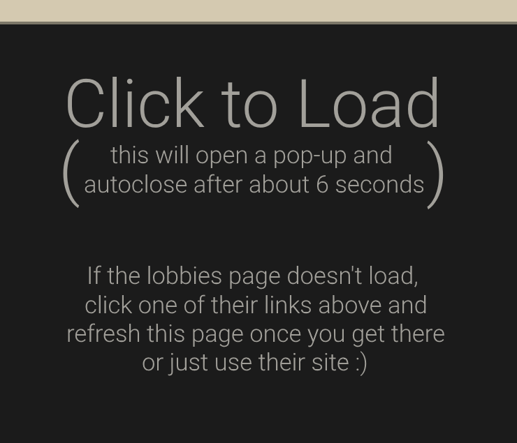

Just reading walls of information won't make you instantly better at the
game. Playing the game and
implementing that new knowledge however can help make it stick and can help make you understand why it
is important!
Below are some sources of practice that you should use (or at least try out). Note
that each site/group is different and that some may be more enjoyable than others. It is important to
find which one is a good fit for you.
Many of these use either 'Mumble' or 'Discord'. Many groups require you to use one of these
and to have a functioning microphone (and to be comfortable enough to use it to make callouts and other
things).
Newbie MixesNewbie Mixes are one of the best ways (if not the best) to get into competitive TF2. There are variations depending on your region, but they usually have a few things:
Compared to a normal lobby or 'PUG' group, with just these points they are already
magnitudes more helpful for newbies.
North AmericaThe best choice for Newbie Mixes for people in NA would be the NA 6v6 Newbie Mix Steam group. EuropeAs for the best choice for EU, the European TF2 League (ETF2L) hosts Newbie Mixes in their Discord server every week. |
TF2CenterBelow is an embedded part of TF2Center's lobbies. Please
abide by all of their rules
and guidelines. You can
check out their FAQ for
more
information.

Not loading? Click here
to get preload the page (uses a popup) (Frag.TF is not affiliated with TF2Center in any way, shape, or form) |